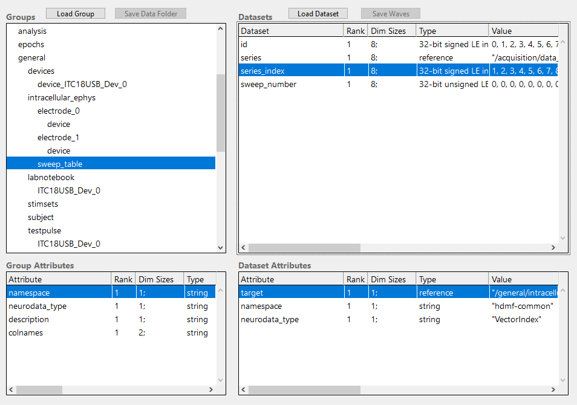

NWB version 2¶
Recent NWB (version 2) schema specifications are tracked in a separate repository. The schema is implemented in version 2.2.0 (62c73400565afc28f67ede4f2e86023c33167cf8).
The complete schema tree is described in a hdmf compatible format and replicated in this repository under namespace/{schema}/{yaml,json}/*. The JSON files are stored in the nwb file upon storage. A build script exists to generate the JSON files from their YAML files: update_specifications.sh.
The following deviations from NWB schema 2.2.0 were recorded:
991ab801aae626710a8ec710869bb1b4508e91b7 ndx-MIES (heads/first-steps)
24fba6174ddbad171ee5bb824edfa31f86b1b16d specifications (2.2.4)
# diff namespace core upstream vs IPNWB specifications for nwb.base
# diff namespace core upstream vs IPNWB specifications for nwb.behavior
# diff namespace core upstream vs IPNWB specifications for nwb.device
# diff namespace core upstream vs IPNWB specifications for nwb.ecephys
# diff namespace core upstream vs IPNWB specifications for nwb.epoch
# diff namespace core upstream vs IPNWB specifications for nwb.file
# diff namespace core upstream vs IPNWB specifications for nwb.icephys
# diff namespace core upstream vs IPNWB specifications for nwb.image
# diff namespace core upstream vs IPNWB specifications for nwb.misc
# diff namespace core upstream vs IPNWB specifications for nwb.namespace
2,4c2
< - name: core
< doc: NWB namespace
< author:
---
> - author:
17a16
> doc: NWB namespace
18a18
> name: core
23c23
< source: nwb.base.yaml
---
> source: nwb.base
26c26
< source: nwb.device.yaml
---
> source: nwb.device
29c29
< source: nwb.epoch.yaml
---
> source: nwb.epoch
32c32
< source: nwb.image.yaml
---
> source: nwb.image
35c35
< source: nwb.file.yaml
---
> source: nwb.file
38c38
< source: nwb.misc.yaml
---
> source: nwb.misc
41c41
< source: nwb.behavior.yaml
---
> source: nwb.behavior
45c45
< source: nwb.ecephys.yaml
---
> source: nwb.ecephys
49c49
< source: nwb.icephys.yaml
---
> source: nwb.icephys
52c52
< source: nwb.ogen.yaml
---
> source: nwb.ogen
55c55
< source: nwb.ophys.yaml
---
> source: nwb.ophys
58c58
< source: nwb.retinotopy.yaml
---
> source: nwb.retinotopy
# diff namespace core upstream vs IPNWB specifications for nwb.ogen
# diff namespace core upstream vs IPNWB specifications for nwb.ophys
# diff namespace core upstream vs IPNWB specifications for nwb.retinotopy
# diff namespace hdmf-common upstream vs IPNWB specifications for namespace
2,4c2
< - name: hdmf-common
< doc: Common data structures provided by HDMF
< author:
---
> - author:
13a12
> doc: Common data structures provided by HDMF
14a14
> name: hdmf-common
17c17
< source: table.yaml
---
> source: table
20c20
< source: sparse.yaml
---
> source: sparse
# diff namespace hdmf-common upstream vs IPNWB specifications for sparse
# diff namespace hdmf-common upstream vs IPNWB specifications for table
# diff namespace ndx-mies upstream vs IPNWB specifications for namespace
# diff namespace ndx-mies upstream vs IPNWB specifications for ndx-mies.extensions
The most important core properties are for intracellular ephys.
groups:
- neurodata_type_def: PatchClampSeries
neurodata_type_inc: TimeSeries
doc: An abstract base class for patch-clamp data - stimulus or response,
current or voltage.
attributes:
- name: stimulus_description
dtype: text
doc: Protocol/stimulus name for this patch-clamp dataset.
- name: sweep_number
dtype: uint32
doc: Sweep number, allows to group different PatchClampSeries together.
required: false
datasets:
- name: data
dtype: numeric
dims:
- num_times
shape:
- null
doc: Recorded voltage or current.
attributes:
- name: unit
dtype: text
doc: Base unit of measurement for working with the data. Actual stored values are
not necessarily stored in these units. To access the data in these units,
multiply 'data' by 'conversion'.
- name: gain
dtype: float32
doc: Gain of the recording, in units Volt/Amp (v-clamp) or Volt/Volt (c-clamp).
quantity: '?'
links:
- name: electrode
target_type: IntracellularElectrode
doc: Link to IntracellularElectrode object that describes the electrode that was
used to apply or record this data.
- neurodata_type_def: CurrentClampSeries
neurodata_type_inc: PatchClampSeries
doc: Voltage data from an intracellular current-clamp recording. A
corresponding CurrentClampStimulusSeries (stored separately as a stimulus) is
used to store the current injected.
datasets:
- name: data
doc: Recorded voltage.
attributes:
- name: unit
dtype: text
value: volts
doc: Base unit of measurement for working with the data. which is fixed to 'volts'.
Actual stored values are not necessarily stored in these units. To access the data in these units,
multiply 'data' by 'conversion'.
- name: bias_current
dtype: float32
doc: Bias current, in amps.
quantity: '?'
- name: bridge_balance
dtype: float32
doc: Bridge balance, in ohms.
quantity: '?'
- name: capacitance_compensation
dtype: float32
doc: Capacitance compensation, in farads.
quantity: '?'
- neurodata_type_def: IZeroClampSeries
neurodata_type_inc: CurrentClampSeries
doc: Voltage data from an intracellular recording when all current
and amplifier settings are off (i.e., CurrentClampSeries fields will be zero).
There is no CurrentClampStimulusSeries associated with an IZero series because
the amplifier is disconnected and no stimulus can reach the cell.
datasets:
- name: bias_current
dtype: float32
value: 0.0
doc: Bias current, in amps, fixed to 0.0.
- name: bridge_balance
dtype: float32
value: 0.0
doc: Bridge balance, in ohms, fixed to 0.0.
- name: capacitance_compensation
dtype: float32
value: 0.0
doc: Capacitance compensation, in farads, fixed to 0.0.
- neurodata_type_def: CurrentClampStimulusSeries
neurodata_type_inc: PatchClampSeries
doc: Stimulus current applied during current clamp recording.
datasets:
- name: data
doc: Stimulus current applied.
attributes:
- name: unit
dtype: text
value: amperes
doc: Base unit of measurement for working with the data. which is fixed to 'amperes'.
Actual stored values are not necessarily stored in these units. To access the data in these units,
multiply 'data' by 'conversion'.
- neurodata_type_def: VoltageClampSeries
neurodata_type_inc: PatchClampSeries
doc: Current data from an intracellular voltage-clamp recording. A
corresponding VoltageClampStimulusSeries (stored separately as a stimulus) is
used to store the voltage injected.
datasets:
- name: data
doc: Recorded current.
attributes:
- name: unit
dtype: text
value: amperes
doc: Base unit of measurement for working with the data. which is fixed to 'amperes'.
Actual stored values are not necessarily stored in these units. To access the data in these units,
multiply 'data' by 'conversion'.
- name: capacitance_fast
dtype: float32
doc: Fast capacitance, in farads.
quantity: '?'
attributes:
- name: unit
dtype: text
value: farads
doc: Unit of measurement for capacitance_fast, which is fixed to 'farads'.
- name: capacitance_slow
dtype: float32
doc: Slow capacitance, in farads.
quantity: '?'
attributes:
- name: unit
dtype: text
value: farads
doc: Unit of measurement for capacitance_fast, which is fixed to 'farads'.
- name: resistance_comp_bandwidth
dtype: float32
doc: Resistance compensation bandwidth, in hertz.
quantity: '?'
attributes:
- name: unit
dtype: text
value: hertz
doc: Unit of measurement for resistance_comp_bandwidth, which is fixed to 'hertz'.
- name: resistance_comp_correction
dtype: float32
doc: Resistance compensation correction, in percent.
quantity: '?'
attributes:
- name: unit
dtype: text
value: percent
doc: Unit of measurement for resistance_comp_correction, which is fixed to 'percent'.
- name: resistance_comp_prediction
dtype: float32
doc: Resistance compensation prediction, in percent.
quantity: '?'
attributes:
- name: unit
dtype: text
value: percent
doc: Unit of measurement for resistance_comp_prediction, which is fixed to 'percent'.
- name: whole_cell_capacitance_comp
dtype: float32
doc: Whole cell capacitance compensation, in farads.
quantity: '?'
attributes:
- name: unit
dtype: text
value: farads
doc: Unit of measurement for whole_cell_capacitance_comp, which is fixed to 'farads'.
- name: whole_cell_series_resistance_comp
dtype: float32
doc: Whole cell series resistance compensation, in ohms.
quantity: '?'
attributes:
- name: unit
dtype: text
value: ohms
doc: Unit of measurement for whole_cell_series_resistance_comp, which is fixed to 'ohms'.
- neurodata_type_def: VoltageClampStimulusSeries
neurodata_type_inc: PatchClampSeries
doc: Stimulus voltage applied during a voltage clamp recording.
datasets:
- name: data
doc: Stimulus voltage applied.
attributes:
- name: unit
dtype: text
value: volts
doc: Base unit of measurement for working with the data. which is fixed to 'volts'.
Actual stored values are not necessarily stored in these units. To access the data in these units,
multiply 'data' by 'conversion'.
- neurodata_type_def: IntracellularElectrode
neurodata_type_inc: NWBContainer
doc: An intracellular electrode and its metadata.
datasets:
- name: description
dtype: text
doc: Description of electrode (e.g., whole-cell, sharp, etc.).
- name: filtering
dtype: text
doc: Electrode specific filtering.
quantity: '?'
- name: initial_access_resistance
dtype: text
doc: Initial access resistance.
quantity: '?'
- name: location
dtype: text
doc: Location of the electrode. Specify the area, layer, comments on estimation
of area/layer, stereotaxic coordinates if in vivo, etc. Use standard atlas
names for anatomical regions when possible.
quantity: '?'
- name: resistance
dtype: text
doc: Electrode resistance, in ohms.
quantity: '?'
- name: seal
dtype: text
doc: Information about seal used for recording.
quantity: '?'
- name: slice
dtype: text
doc: Information about slice used for recording.
quantity: '?'
links:
- name: device
target_type: Device
doc: Device that was used to record from this electrode.
- neurodata_type_def: SweepTable
neurodata_type_inc: DynamicTable
doc: The table which groups different PatchClampSeries together.
datasets:
- name: sweep_number
neurodata_type_inc: VectorData
dtype: uint32
doc: Sweep number of the PatchClampSeries in that row.
- name: series
neurodata_type_inc: VectorData
dtype:
target_type: PatchClampSeries
reftype: object
doc: The PatchClampSeries with the sweep number in that row.
- name: series_index
neurodata_type_inc: VectorIndex
doc: Index for series.
The includes a Dynamic Table at /general/intracellular_ephys/sweep_table to store the sweep numbers of a list of data sets. The table is column centric and consists of the two columns sweep_number and series. Series contains links to datasets. The sweep_number for a dataset is stored under the same row index, specified either by the Dataset id (zero-based indices) or by series_index (one-based indices). The sweep_table is intended to easily find datasets that belong to a given sweep number. A sweep table is loaded by LoadSweepTable and created using AppendToSweepTable
{kind=link}